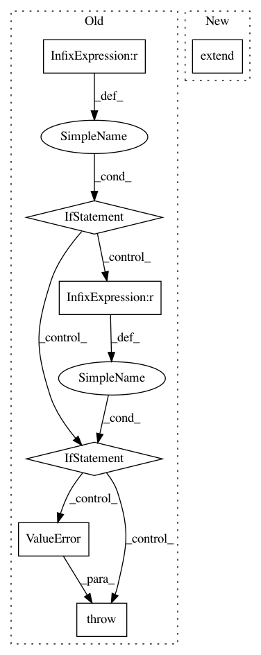

b903f8ec84d21253a1eebff9b29519a9e934f254,examples/tox21/train_tox21.py,,main,#,40
Before Change
repeat=False, shuffle=False)
accfun_mode = args.accfun_mode
if accfun_mode == 0:
accfun = F.binary_accuracy
elif accfun_mode == 1:
from sklearn import metrics
def get_1d_numpy_array(v):
if isinstance(v, chainer.Variable):
v = v.data
return cuda.to_cpu(v).ravel()
def accfun(y, t):
// -- calc & report ROC-AUC ---
// note that this is dirty hack implementation.
// roc auc is calculated per minibatch, and mean is taken to show
// PrintReport. This calculation is not same as total batch roc auc
// calculation.
t_data = get_1d_numpy_array(t)
y_data = get_1d_numpy_array(y)
y_data = y_data[t_data != -1]
t_data = t_data[t_data != -1]
try:
roc_auc = metrics.roc_auc_score(t_data, y_data)
reporter.report({"roc_auc": roc_auc}, classifier)
except ValueError as e:
// When `t_data` only contains one label (ex. only 0), roc auc
// cannot be calculated and ValueError is raised.
// This implementation just ignores this minibatch for roc auc
// calculation.
pass
// --- calc ROC-AUC end ---
return F.binary_accuracy(y, t)
else:
raise ValueError("Invalid accfun_mode {}".format(accfun_mode))
classifier = L.Classifier(predictor_,
lossfun=F.sigmoid_cross_entropy,
accfun=accfun)
if args.gpu >= 0:
After Change
trainer.extend(ROCAUCEvaluator(
train_eval_iter, classifier, predictor=predictor_,
device=args.gpu, converter=concat_mols, name="train"))
trainer.extend(ROCAUCEvaluator(
val_iter, classifier, predictor=predictor_,
device=args.gpu, converter=concat_mols, name="val"))
trainer.extend(E.PrintReport([
"epoch", "main/loss", "main/accuracy", "train/roc_auc",
"validation/main/loss", "validation/main/accuracy",
"val/roc_auc", "elapsed_time"]))
In pattern: SUPERPATTERN
Frequency: 4
Non-data size: 7
Instances
Project Name: pfnet-research/chainer-chemistry
Commit Name: b903f8ec84d21253a1eebff9b29519a9e934f254
Time: 2017-12-21
Author: corochannz@gmail.com
File Name: examples/tox21/train_tox21.py
Class Name:
Method Name: main
Project Name: nipy/dipy
Commit Name: c490bc95a63a8c9bd00c0a202f1b3ba8c2a48b5a
Time: 2020-04-20
Author: francois.m.rheault@usherbrooke
File Name: dipy/io/stateful_tractogram.py
Class Name: StatefulTractogram
Method Name: __add__
Project Name: Pinafore/qb
Commit Name: ed86dfa55a2750324646e08e3f7e2cee5b667319
Time: 2018-07-09
Author: ski.rodriguez@gmail.com
File Name: qanta/guesser/elmo.py
Class Name: ElmoGuesser
Method Name: train
Project Name: rusty1s/pytorch_geometric
Commit Name: 3a90b261c8be2faf8f33cf3283e90b1b418da7b2
Time: 2017-10-17
Author: matthias.fey@tu-dortmund.de
File Name: torch_geometric/graph/geometry.py
Class Name:
Method Name: polar_coordinates